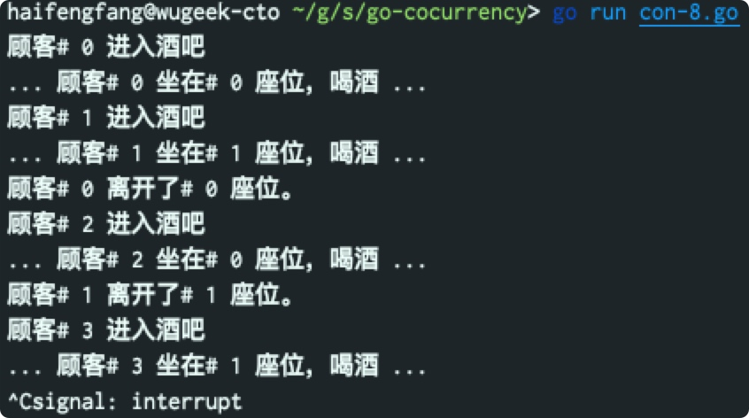

Golang 并发开发实践（5）- Channel 原理与模式

目录
本文是对Go 101中关于“并发开发”内容的梳理。请借鉴操作系统中的“管程”概念对channel的内部工作原理进行理解。
要点
- 双向通道chan T的值可以被隐式转换为单向通道类型chan<- T和<-chan T，但反之不行（即使显式也不行）。 类型chan<- T和<-chan T的值也不能相互转换。
- close(ch)：传给close函数调用的实参必须为一个通道值，并且此通道值不能为单向接收的（即 <-chan）
- len(ch)：一个通道的长度是指当前有多少个已被发送到此通道但还未被接收出去的元素值。我们很少使用内置函数len的原因是一个len调用的结果并不能总能准确地反映出的一个通道的当前长度。
- 如果被查询的通道为一个nil零值通道，则cap和len函数调用都返回0。
- 请重点注意对nil通道的操作规则
- 管程（通道）内部原理图
开发过程
根据需求绘制并发模型图，并在图中标出阻塞顺序 “(x)“ 和启动顺序 “< x >"，（如下图）
代码中关注协程与通道的组织（在代码中标出执行顺序，并通过运行进行验证是否与模型图一致）
func main() {
fmt.Println("hello")
ch := make(chan int)
go func(ch chan<- int, x int) {
fmt.Println("03. func1() blocked on sleep")
time.Sleep(time.Second)
fmt.Println("04. func1() wake-up on sleep")
ch <- x*x
}(ch, 3)
done := make(chan struct{})
go func(ch <- chan int) {
fmt.Println("02. func2() blocked on ch")
n := <- ch
fmt.Println("05. func2() wake-up on ch")
fmt.Println("result: ", n)
fmt.Println("06. func2() blocked on sleep")
time.Sleep(time.Second)
fmt.Println("07. func2() wake-up on sleep")
done <- struct{}{}
}(ch)
fmt.Println("01. main() blocked on done")
<- done
fmt.Println("08. main() wake-up on done")
fmt.Println("bye")
}
常见并发模式
永不停止
通过读取nil通道
func main() {
var ball = make(chan string)
kickBall := func(playerName string) {
for {
fmt.Print(playerName, "，接到(", <-ball, ")传球", "\n")
time.Sleep(time.Second)
fmt.Println(playerName + "，踢球")
ball <- playerName
}
}
go kickBall("张三")
go kickBall("李四")
go kickBall("王二")
go kickBall("刘大")
fmt.Println("裁判，开球")
ball <- "裁判" // 开球
var c chan bool // 一个零值nil通道
<-c // 永久阻塞在此
}
通过 select{} 实现
一般，select{}用在主协程中以防止程序退出。注意：main中一定启动了其他协程，否则会发出”死锁“异常
func DoSomething() {
for {
fmt.Println("do ...")
runtime.Gosched() // 防止本协程霸占CPU不放
}
}
func main() {
go DoSomething()
go DoSomething()
fmt.Println("Do not stop for ever.")
select{}
}
异步请求与响应（Promise）
模拟 await/async (1): 返回单向接收通道做为函数返回结果
func async_long_time_request() (await_rq <-chan int32) {
rq := make(chan int32)
go func() {
time.Sleep(time.Second * 3)
v := rand.Int31n(100)
fmt.Println("rq: ", v)
rq <- v
}()
return rq
}
func async_sum_squares(a, b int32) int32 {
return a*a + b*b
}
func main() {
rand.Seed(time.Now().UnixNano())
await_a, await_b := async_long_time_request(), async_long_time_request()
await_sum := async_sum_squares(<-await_a, <-await_b)
fmt.Println("sum: ", await_sum)
}
模拟 await/async (2): 将单向发送通道类型用做函数实参
func Async_long_time_request(rq chan<- int32) {
time.Sleep(time.Second * 3)
rq <- rand.Int31n(100)
}
func Async_sum_squares(a, b int32) int32 {
return a*a + b*b
}
func main() {
rand.Seed(time.Now().UnixNano())
await_ch1, await_ch2 := make(chan int32), make(chan int32)
go Async_long_time_request(await_ch1)
go Async_long_time_request(await_ch2)
await_sum := Async_sum_squares(<-await_ch1, <-await_ch2)
fmt.Println("sum: ", await_sum)
}
模拟 await/async (3): 缓冲通道版

func main() {
rand.Seed(time.Now().UnixNano())
await_ch := make(chan int32, 2)
go Async_long_time_request(await_ch)
go Async_long_time_request(await_ch)
await_sum := Async_sum_squares(<-await_ch, <-await_ch)
fmt.Println("sum: ", await_sum)
}
多数据源获取响应，最快响应优先
一份数据可能同时从多个数据源获取。这些数据源将返回相同的数据。 因为各种因素，这些数据源的回应速度参差不一，甚至某个特定数据源的多次回应速度之间也可能相差很大。 同时从多个数据源获取一份相同的数据可以有效保障低延迟。我们只需采用最快的回应并舍弃其它较慢回应。（注意：如果有N个数据源，为了防止被舍弃的回应对应的协程永久阻塞，则传输数据用的通道必须为一个容量至少为N-1的缓冲通道。）
type async_request struct {
data_source_index int
data_value int32
data_delay time.Duration
}
func async_data_source(result chan<- async_request, start_time time.Time, source_index int) {
await_value := rand.Int31n(10)
await_duration := rand.Int31n(10) + 1
fmt.Println("go datasource", source_index, " till ", await_duration, "seconds")
time.Sleep(time.Duration(await_duration) * time.Second)
await_delay := time.Since(start_time)
fmt.Println("datasource", source_index, ", delay", await_delay, ", value", await_value)
a_request := async_request{
data_source_index: source_index,
data_value: await_value,
data_delay: await_delay,
}
result <- a_request
}
func main() {
rand.Seed(time.Now().UnixNano())
start_time := time.Now()
requests := make(chan async_request, 5)
for i:=0; i<cap(requests); i++ {
go async_data_source(requests, start_time, i)
}
got_first := <- requests
fmt.Printf("got_first: %#v\n", got_first)
}
各种通知
在一个通知用例中，我们并不关心回应的值，我们只关心回应是否已发生。 所以我们常常使用空结构体类型struct{}来做为通道的元素类型，因为空结构体类型的尺寸为零，能够节省一些内存（虽然常常很少量）。
一对一通知（向一个通道发送一个值）：子协程通知主协程，它已结束
func main() {
values := make([]byte, 32 * 1024 * 1024)
if _, err := rand.Read(values); err != nil {
fmt.Println(err)
os.Exit(1)
}
done := make(chan struct{})
start_time := time.Now()
go func() {
sort.Slice(values, func(i, j int) bool {
return values[i] < values[j]
})
done <- struct{}{}
}()
<- done
fmt.Println(values[0], values[len(values)-1], time.Since(start_time))
}
一对一通知（从一个通道接收一个值）；主协程通知子协程可以结束了
一般我们使用非缓冲通道来实现这样的通知。（使用的较少）
func main() {
done := make(chan struct{})
go func() {
fmt.Print("hello")
for {
select {
case <- time.After(time.Nanosecond):
<- done
return
default:
fmt.Print("...")
}
}
}()
done <- struct{}{}
fmt.Println(" world!")
}
多对单和单对多通知
多对单和单对多通知实现方式在实践中用的并不多。 在实践中，我们多使用sync.WaitGroup来实现多对单通知，使用关闭一个通道的方式来实现单对多通知
type T = struct {}
func Worker(start_time time.Time, id int, ready <-chan T, done chan<- T) {
<-ready // 等等主协程通知开始（1-N)
dur := rand.Int31n(10)
fmt.Println("Got ready, Worker", id, "started, last for", dur, "seconds")
time.Sleep(time.Duration(dur) * time.Second) // 模拟一个工作负载
fmt.Println("Worker", id, "stopped, after", time.Since(start_time))
done <- T{} // 通知主协程（N-1）
}
func main() {
fmt.Println("main started")
start_time := time.Now()
ready, done := make(chan T), make(chan T)
go Worker(start_time, 1, ready, done)
go Worker(start_time, 2, ready, done)
go Worker(start_time, 3, ready, done)
// 模拟一个初始化过程
time.Sleep(time.Second * 3 / 2)
fmt.Println("main send ready at", time.Since(start_time))
// 1-N 通知
ready <- T{}
ready <- T{}
ready <- T{}
// N-1 通知
<- done
fmt.Println("Got done")
<- done
fmt.Println("Got done")
<- done
fmt.Println("Got done")
fmt.Println("main stopped")
}
通过关闭一个通道来实现群发通知(1-N)
通过关闭一个通道的方式在来实现单对多通知的方式更简单。 我们已经知道，从一个已关闭的通道可以接收到无穷个值，我们可以利用这一特性来实现群发通知。事实上，关闭通道来是实践中用得最多通知实现方式。比如，context标准库包使用了此特性来传达操作取消消息。
func main() {
fmt.Println("main started")
start_time := time.Now()
ready, done := make(chan T), make(chan T)
go Worker(start_time, 1, ready, done)
go Worker(start_time, 2, ready, done)
go Worker(start_time, 3, ready, done)
time.Sleep(time.Second * 3 / 2)
fmt.Println("main send ready at", time.Since(start_time))
//ready <- T{}
//ready <- T{}
//ready <- T{}
close(ready) // 注意：ready不能是 nil，务必使用make创建
<- done
fmt.Println("Got done")
<- done
fmt.Println("Got done")
<- done
fmt.Println("Got done")
fmt.Println("main stopped")
}
定时通知
操作<-time.After(aDuration)将使当前协程进入阻塞状态，而一个time.Sleep(aDuration)函数调用不会如此。 <-time.After(aDuration) 也经常被使用在超时机制场景中。
func main() {
fmt.Println("Hi !")
<- time.After(time.Second)
fmt.Println("Hello !")
<- time.After(time.Second)
fmt.Println("Bye !")
}
实现互斥信号量（Mutex）
容量为1的缓冲通道也可以用做多次性二元信号量（即互斥锁）尽管这样的互斥锁效率不如sync标准库包中提供的互斥锁高效。注意：非缓冲通道的容量为0，默认为满状态，阻塞态。
通过发送操作来加锁，通过接收操作来解锁
type TT struct {}
func main() {
mutex := make(chan TT, 1) // 容量务必为 1, 默认为开锁状态·
counter := 0
increase := func() {
mutex <- TT{} // 上锁（P)
counter++
<-mutex // 解锁（V）
}
test_increase := func(done chan<- TT) {
for i:=0; i<1000; i++ {
increase()
}
done <- TT{}
}
done := make(chan TT)
go test_increase(done)
go test_increase(done)
<-done
<-done
fmt.Println(counter) // 2000
}
通过接收操作来加锁，通过发送操作来解锁
func main() {
mutex := make(chan TT, 1) // 务必为 1
mutex <- TT{} // 初始解锁
counter := 0
increase := func() {
<- mutex // 上锁
counter++
mutex <- TT{} // 解锁
}
test_increase := func(done chan<- TT) {
for i:=0; i<1000; i++ {
increase()
}
done <- TT{}
}
done := make(chan TT)
go test_increase(done)
go test_increase(done)
<-done
<-done
fmt.Println(counter) // 2000
}
实现计数信号量
计数信号量可以被视为多主锁。如果一个缓冲通道的容量为N，那么它可以被看作是一个在任何时刻最多可有N个主人的锁。 上面提到的二元信号量是特殊的计数信号量，每个二元信号量在任一时刻最多只能有一个主人。
计数信号量经常被使用于限制最大并发数。
控制同时处于非阻塞的协程数量（例如不超过计数）
type Seat int
type Bar chan Seat
func (bar Bar) Serve_customer(idx int) {
fmt.Println("顾客#", idx, "进入酒吧")
seat := <- bar // bar的容量，限制了同时处于就绪的协程的数量
fmt.Println("... 顾客#", idx, "坐在#", seat, "座位，喝酒 ...")
time.Sleep(time.Second * time.Duration(2 + rand.Intn(6)))
fmt.Println("顾客#", idx, "离开了#", seat, "座位。")
bar <- seat
}
func main() {
rand.Seed(time.Now().UnixNano())
bar_24x7 := make(Bar, 10)
for seat_id := 0; seat_id < cap(bar_24x7); seat_id++ {
bar_24x7 <- Seat(seat_id)
}
for customer_id := 0; ; customer_id++ {
time.Sleep(time.Second)
go bar_24x7.Serve_customer(customer_id)
// 实际创建的协程数量可能超过通道容量，未获得seat的协程（处于阻塞状态）
}
// 防止主协程退出
for {
time.Sleep(time.Second) // 注意，sleep 操作不会阻塞协程
}
}
减少处于阻塞状态的协程数量
在上例中，每个顾客对应着一个协程。虽然协程的开销比系统线程小得多，但是如果协程的数量很多，则它们的总体开销还是不能忽略不计的。 所以，最好当有空位的时候才创建顾客协程。
func (bar Bar) Serve_customer_with_seat(idx int, seat Seat) {
fmt.Println("顾客#", idx, "进入酒吧")
//seat := <- bar
fmt.Println("... 顾客#", idx, "坐在#", seat, "座位，喝酒 ...")
time.Sleep(time.Second * time.Duration(2 + rand.Intn(6)))
fmt.Println("顾客#", idx, "离开了#", seat, "座位。")
bar <- seat
}
func main() {
rand.Seed(time.Now().UnixNano())
bar_24x7 := make(Bar, 3)
for seat_id := 0; seat_id < cap(bar_24x7); seat_id++ {
bar_24x7 <- Seat(seat_id)
}
for customer_id := 0; ; customer_id++ {
time.Sleep(time.Second)
seat := <- bar_24x7
go bar_24x7.Serve_customer_with_seat(customer_id, seat)
}
for {
time.Sleep(time.Second)
}
}

不关心座位号的情况下，控制并发协程数量
type Customer struct{id int}
type BigBar chan Customer
func (bar BigBar) Server_customer(cs Customer) {
fmt.Println("顾客#", cs.id, "进店饮酒...")
time.Sleep(time.Second * time.Duration(3 + rand.Intn(15)))
fmt.Println("顾客#", cs.id, "离开了.")
<- bar
}
func main() {
rand.Seed(time.Now().UnixNano())
bar_24x7 := make(BigBar, 10) // 控制最多同时运行的协程数量
for customer_id :=0; ; customer_id++ {
time.Sleep(time.Second * 2)
customer := Customer{customer_id}
bar_24x7 <- customer
go bar_24x7.Server_customer(customer)
}
for {time.Sleep(time.Second)}
}
实现心跳对话（PingPong）
type Ball string
func Play(playerName string, table chan Ball) {
for {
ball := <- table // 接球
fmt.Println(playerName, ball)
if ball == Ball("ping") {
ball = Ball("pong")
} else {
ball = Ball("ping")
}
table <- ball // 回球
time.Sleep(time.Second)
}
}
func main() {
table := make(chan Ball)
go Play("Child:", table)
table <- "ping"
Play("Main:", table)
}
并发检测（各种 Select 尝试）
通过灵活应用select可以实现许多并发检测操作。
尝试读写
含有一个default分支和一个case分支的select代码块可以被用做一个尝试发送或者尝试接收操作，取决于case关键字后跟随的是一个发送操作还是一个接收操作。
func main() {
c := make(chan string, 2)
try_send := func(v string, ch chan<- string) {
select {
case c <- v:
fmt.Println("send:", v)
default:
fmt.Println("ch busy, please try again.")
}
}
try_receive := func(ch <-chan string) string {
select {
case v := <- c:
fmt.Println("receive: ", v)
return v
default:
fmt.Println("ch busy, please try again.")
return "_"
}
}
try_send("Hello!", c)
try_send("Hi!", c)
try_send("Bye!", c)
try_receive(c)
try_receive(c)
try_receive(c)
}
尝试关闭
我们可以使用下面的代码来（并发安全地）检查此通道是否已经关闭，此检查不会阻塞当前协程。常用来查看某个期待中的通知是否已经来临。此通知将由另一个协程通过关闭一个通道来发送。
func IsClosed(c chan T) bool {
select {
case <-c:
return true
default:
}
return false
}
峰值检测
将通道用做计数信号量用例和通道尝试（发送或者接收）操作结合起来可用实现峰值限制。 峰值限制的目的是防止过大的并发请求数。
bar24x7 := make(Bar, 10) // 此酒吧只能同时招待10个顾客
for customerId := 0; ; customerId++ {
time.Sleep(time.Second)
consumer := Consumer{customerId}
select {
case bar24x7 <- consumer: // 试图进入此酒吧
go bar24x7.ServeConsumer(consumer)
default:
log.Print("顾客#", customerId, "不愿等待而离去")
}
}
超时机制（timeout）
利用select实现对一个可能超时的异步协程进行封装
type Request struct {
input int
}
type Response struct {
output int
err error
delay time.Duration
}
func Async_goroutine(request Request, result chan<- Response) {
rq := request
fmt.Printf("got request: %#v\n", rq)
time.Sleep(time.Second * time.Duration(1 + rand.Intn(10)))
rs := Response{
output: 10,
err: nil,
}
result <- rs
}
func Await_goroutine_with_timeout(
request Request, start_time time.Time, timeout int) (*Response, error) {
result := make(chan Response)
go Async_goroutine(request, result)
rs := Response{}
select {
case rs = <- result:
rs.delay = time.Since(start_time)
break
case <-time.After(time.Second * time.Duration(timeout)):
msg := "timeout after " + strconv.Itoa(timeout) + " seconds"
return nil, errors.New(msg)
}
return &rs, nil
}
func main() {
rand.Seed(time.Now().UnixNano())
rq := Request{
input: 1,
}
start_time := time.Now()
rs, err := Await_goroutine_with_timeout(rq, start_time,5)
if err != nil {
fmt.Println(err)
} else {
fmt.Printf("rs.output: %#v\n", rs.output)
fmt.Printf("rs.delay: %v\n", rs.delay.Seconds())
}
for {time.Sleep(time.Second)}
}
脉搏器（ticker)
可以使用尝试发送操作来实现一个每隔一定时间发送一个信号的脉搏器。 事实上，time标准库包中的Tick函数提供了同样的功能，但效率更高。 我们应该尽量使用标准库包中的实现。
func Tick(d time.Duration) <-chan struct{} {
c := make(chan struct{}, 1) // 容量最好为1
go func() {
for {
time.Sleep(d)
select {
case c <- struct{}{}:
default:
}
}
}()
return c
}
func main() {
t := time.Now()
for range Tick(time.Second) {
fmt.Println(time.Since(t))
}
}
速率限制（rate limiting）
type Request interface {
}
func handle(r Request) {
fmt.Println("[handle] to handle#", r.(int))
}
const Ratelimit_period = time.Minute
const Ratelimit = 100
func handle_requests(requests <-chan Request) {
quotas := make(chan time.Time, Ratelimit)
go func() {
tick := time.NewTicker(Ratelimit_period / Ratelimit)
defer tick.Stop()
for t := range tick.C {
select {
case quotas <- t:
fmt.Println("[handle_request.ticker] sent a quota")
default:
}
}
}()
for r := range requests {
<- quotas
fmt.Println("[handle_request] got a quota to handle")
go handle(r)
}
}
func main() {
fmt.Println("[main] started")
requests := make(chan Request)
go handle_requests(requests)
//time.Sleep(time.Second)
for i:=0; ; i++ {
requests <- i
fmt.Println("[main] sent a request#", i)
}
}
通过测试，可以看到，不同RateLimit值，输出"handle#”的速度不一样（RateLimit越大，速度越快）
开关（轮换）
向一个nil通道发送数据或者从中接收数据都属于阻塞操作。 利用这一事实，我们可以将一个select流程控制中的case操作中涉及的通道设置为不同的值，以使此select流程控制选择执行不同的分支。
下面使用了选择机制。在此例子中，两个case操作中的通道有且只有一个为nil，所以只能是不为nil的通道对应的分支被选中。 每个循环步将对调这两个case操作中的通道，从而改变两个分支的可被选中状态。
type Statement string
func Say(playerName string, dialog chan Statement, parent bool) {
var receive, send chan Statement
if parent {
receive, send = nil, dialog
} else {
receive, send = dialog, nil
}
var last_statement Statement = "hi"
for {
select {
case send <- last_statement:
case value := <- receive:
fmt.Println(playerName, value)
last_statement = value
}
receive, send = send, receive
time.Sleep(time.Second)
}
}
func main() {
dialog := make(chan Statement)
go Say("Child:", dialog, false)
Say("Main:", dialog, true)
}
控制代码被执行的几率
可以通过在一个select流程控制中使用重复的case操作来增加对应分支中的代码的执行几率。
func main() {
foo, bar := make(chan struct{}), make(chan struct{})
close(foo); close(bar) // 仅为演示目的
x, y := 0.0, 0.0
f := func(){x++}
g := func(){y++}
for i := 0; i < 100000; i++ {
select {
case <-foo: f()
case <-foo: f()
case <-bar: g()
}
}
fmt.Println(x/y) // 大致为2
}
通过测试，可以看到，调用f()的次数大约是调用g()的两倍
数据流处理
数据流处理系统概述
一般来说，一个数据流处理程序由多个模块组成。不同的模块执行分配给它们的不同的任务。 每个模块由一个或者数个并行工作的协程组成。一个模块中的工作协程从一些其它模块接收数据做为输入，并向另一些模块发送输出数据。 换句话数，一个模块可能同时兼任数据消费者和数据产生者的角色。多个模块一起组成了一个数据流处理系统。
数据生成、搜集、加载
一个数据产生者可能通过以下途径生成数据：
- 加载一个文件、或者读取一个数据库、或者用爬虫抓取网页数据；
- 从一个软件或者硬件系统搜集各种数据；
- 产生一系列随机数；等等
一个随机数生成器
一个数据产生者可以在任何时刻关闭返回的通道以结束数据生成。
func Random_generator() chan uint16 {
c := make(chan uint16)
go func() {
rnds := make([]byte, 2)
for {
_, err := rand.Read(rnds)
if err != nil {
close(c)
break
}
c <- binary.BigEndian.Uint16(rnds)
}
}()
return c
}
func main() {
fmt.Println("main started")
g := Random_generator()
rd := <- g
fmt.Println("got a random: ", rd)
rd = <- g
fmt.Println("got a random: ", rd)
close(g)
fmt.Println("main stopped")
}